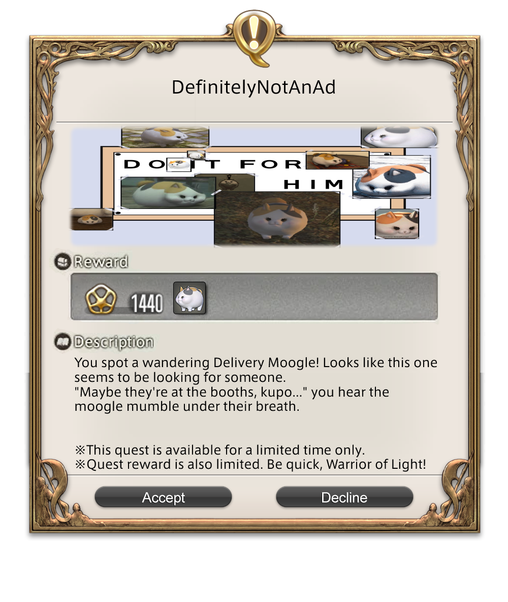

<!DOCTYPE html>
<html>
    <head>
        <meta charset="UTF-8">
        <title>AviDaVinci's Limited Event!</title>
        <script src="https://aframe.io/releases/1.4.1/aframe.min.js"></script>
        <script src="https://unpkg.com/aframe-look-at-component@0.8.0/dist/aframe-look-at-component.min.js"></script>
    </head>

    <style>
        body {
            margin: 0;
            overflow: hidden;
        }
        #QWindow {
            position: absolute;
            top: 0;
            left: 0;
            right: 0;
            bottom: 0;
            margin: auto;
            display: flex;
            justify-content: center;
            align-items: center;
            max-width: 100%;
            max-height: 100%;
            width: auto;
            height: auto;
        }
        #QWindow img {
            max-width: 100%;
            max-height: 100%;
            width: auto;
            height: auto;
        }
    </style>

    <body>
        <!-- <div id="QWindow">
            
        </div> -->
        <a-scene vr-mode-ui="enabled: false">
            <a-assets>
                
            </a-assets>

            <a-image id="qwImage" src="#QWindow" width="0.84" height="1" look-at="[camera]" onload="loadTime"></a-image>

            <a-entity id="rig" position="0 -1.6 1">
                <a-camera id="camera"></a-camera>
            </a-entity>
        </a-scene>

        <script>
            var qwindow = document.querySelector('#qwImage');
            var camera = document.querySelector('#camera');
            var distance = 2; // Change this value to adjust the distance from the camera

            const loadTime = setInterval(function() {
                var cameraPos = camera.getAttribute('position');
                var cameraRot = camera.getAttribute('rotation');
                var xn = cameraPos.x - distance * Math.sin(cameraRot.y * Math.PI / 180) * Math.cos(cameraRot.x * Math.PI / 180);
                var yn = cameraPos.y + distance * Math.sin(cameraRot.x * Math.PI / 180);
                qwindow.setAttribute('position', { x: xn, y: yn, z: qwindow.getAttribute('position').z });
                qwindow.setAttribute('rotation', cameraRot);
            }, 10);
        </script>

    </body>
</html>